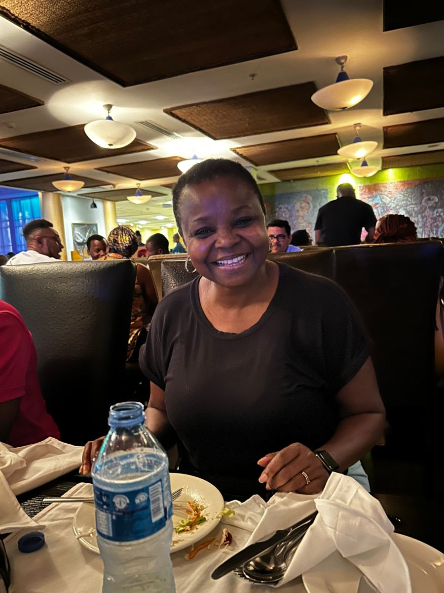

Hi, I'm Ada.
Nurse. Farmer. Builder. I help people reinvent themselves, build wealth and live free, with Africa as part of the opportunity.

From the hospital to the farm
I spent years as a nurse. At the bedside I kept seeing the same thing: what people eat shapes how healthy they are. So I went to the source. I started growing food.

Today I run Manna Farms, a registered farm in Aba, Nigeria. I built FarmLog, a platform that helps farmers manage their records and their business. And I run the Agribusiness Investors Club, where people in the diaspora learn before they invest in African agriculture.
Why I built Move Back to Africa
I've watched too many people move home on emotion, with no plan, and lose their savings, their peace, or both. I've also watched too many people stay stuck, saying "I want to move back home, but I don't know where to start."
This site is where I share what I've learned building from abroad: the mindset, the money and the plan. It's part of Build With Ada, my personal brand about mindset, wealth and freedom. You don't have to choose between the life you built abroad and the opportunities back home.

Africa is part of the opportunity. Freedom is the bigger goal.
Where to start
- Take the free readiness quiz to see where you stand.
- Read the 2026 checklist for moving back to Africa.
- Browse the workbooks when you're ready to plan.